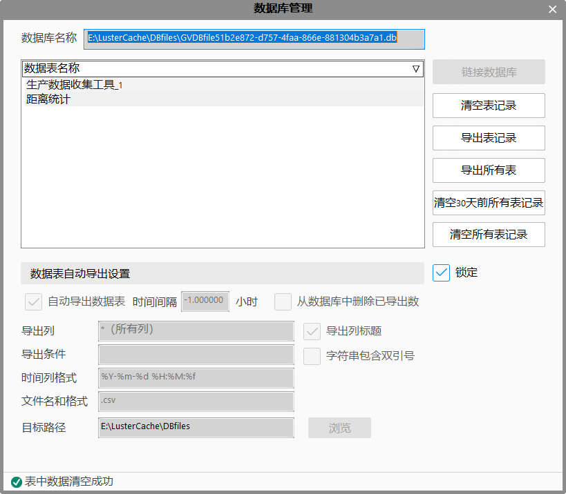
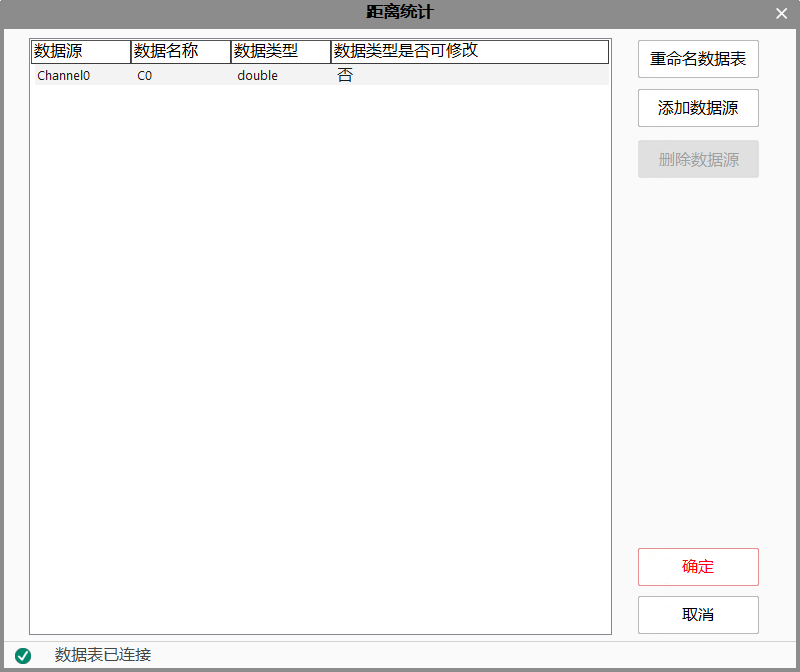

工程中收集的数据，通过功能区-设置里的数据库管理，进行参数设置及管理。数据库的数据，来自于数据收集工具，所以数据库管理模块需要和数据收集工具一起使用。当链接数据库成功后，工程中每添加一个数据收集工具，数据库中就会生成一个与之对应的表。

通过数据收集工具的高级属性窗口，可以对表增加和删除数据源（即表中的列），设置数据源类型，重命名表的名称等。见下图。

数据库名称：显示当前数据库的完整路径；
链接数据库：数据库名称不为空时，标明数据库链接成功，按钮禁用；
当前解决方案有数据库时，打开数据库（下方显示数据库里的数据表）；如果数据库文件查找失败或数据库内容不匹配，均链接失败；
当前解决方案没有数据库时，新增空数据库（下方初始状态没有数据表，需要新增数据收集工具才可新增数据表）；
数据表名称：显示当前数据库里的所有数据表名称，每个表对应一个数据收集工具；
清空表记录：清空当前数据表的数据记录；
导出表记录：导出当前数据表的数据记录；
导出所有表：将所有的数据表全部导出；
清空30天前所有表记录：清空30天前当前数据库里所有数据表的数据记录；
清空所有表记录：清空当前数据库里所有数据表的所有数据；
数据表自动导出设置
锁定：只有在不锁定的情况下，才可以设置数据表的自动导出。
自动导出数据表：如果选中，软件会按照时间间隔自动保存数据库到相应的目录。
时间间隔：用于自动导出数据库设置的时间间隔。
从数据库中删除已导出数据：此项决定是否删除已经导出的数据。
导出列：可以选择导出的一个或者多个列，默认是全部导出。
导出列标题：导出的表是否添加列名称。
导出条件：可以设置一列或者多列的条件，将符合条件的记录进行导出。如上图所示的表，可以设置“Channel0>100”,这样，表中Channel0这一列大于100的行都会被筛选出来并导出。
字符串包含双引号：数据库里面如果有字符串，导出的时候是否添加双引号
时间列格式：默认的是按照年月日时分秒进行的设置的。也可以按照自己需要的格式设置。
文件名和格式：设置导出数据表的名称，默认是会在末尾添加.csv文件名后缀。
目录路径/浏览:使用浏览按钮选择导出的目录路径。